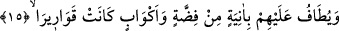

“Cennette ağaçların gölgeleri, ebrâr olan iyi kulların yakınlarına kadar yaklaşmış; bu
ağaçlar onların üzerinde birer gölgelik hâlini almışlardır. Gerçi, cennette insanlara
eziyet verecek derecede aşırı bir güneş yoktur ki onun ışınlarından gölgelenme
ihtiyacını hissetsinler. Dolayısıyla bu ifâde, cennet halkının ne kadar çok nimet içinde
yüzeceklerini ve ne derece mükemmel bir rahatlığı yaşayacaklarını beyân etmektedir.
Çünkü, bilindiği üzere dünyada gölge, rahatlık içindir.
“Kolayca koparılabilen meyveleri istifâdelerine sunulur.” Yâni; cennet ağaçlarının
meyveleri, onları yiyecek olanlara âmâde kılınmıştır. O meyveler ayakta duran, oturan
ve uzanan için kolayca koparılabilecek bir hâle getirilmiştir. Bu cümle, yukarda geçen
“dâniyetun/yakındır” kelimesinden hâldir. Buna göre âyetin anlamı “cennet ağaçlarının
meyveleri cennetliklerin emirlerine âmâde olduğu hâlde gölgeleri de onlara yakındır”
şeklinde olur. Sözkonusu cümle, yukardaki “dâniyetun/yakındır” kelimesi üzerine
atfedilmiş de olabilir. Bu takdire göre mânâ şöyledir: “Cennet ağaçlarının gölgeleri
cennetliklerin yakınlarındadır ve meyveleri de onların emirlerine âmâdedir. Âyetteki,
“meyve” şeklinde tercüme edilen “kutûf” kelimesi, “kıtf” kelimesinin çoğulu olup
“salkım” anlamındadır. Bu kökten türetilmiş olan “katafe” fiili de “meyveyi koparmak”
mânâsını ifâde eder. Salkıma “kesip koparma” kökünden “kıtf” denmesi ise, üzüm
salkımının olgunlaştığı zaman dalından kesilip koparılmasından dolayıdır.
15. Yanlarında, gümüş kaplar ve billûr kâselerle dolaşılır.
Ebrâr, içmek istedikleri zaman “yanlarında, gümüş kaplar ve billûr kâselerle” şeffaf
kupalarla “dolaşılır.”
Âyetteki “yutâfu” fiilinin kök anlamı, dolaşmak ve dönmek demektir. Nitekim bu
anlamdan dolayı -ilerde geleceği üzere- evde dönüp dolaşan hizmetçiler için bu kökten
türeyen “tâif” kelimesi kullanılmıştır.
Âyetteki “kupalar” şeklinde tercüme edilen “ekvâb” kelimesinin tekili olan “kûb”,
emziği ve kulpu olmayan, üst kısmı yuvarlak olan su kabıdır. Üst tarafı yuvarlak olduğu
için böyle bir kabın her yanından kolayca su içilebilir. İçerken şöyle veya böyle
çevirmeye ihtiyaç duyulmaz. Âyette târif edilen kupa, bugün arap ülkelerinde hâlâ
kullanılmaktadır.
Allah buraya kadar cennetliklerin yiyeceklerini, giyeceklerini ve meskenlerini beyân
buyurdu. Burada da onların içeceklerini haber veriyor. Ancak, içmekte kullandıkları
kapları, içeceklerinden önce zikrediyor. İçeceklerin dolaştırılması “meçhul” kip
kullanılarak ifâde edilmektedir. Çünkü asıl maksad, bu içecekleri kimlerin dağıttığı
değil, neyin dağıtıldığıdır. Nitekim aşağıda gelen âyetlerde “yetûfu aleyhim” ifâdesiyle
kimlerin dolaştığı da biraz sonra zikredilecektir.